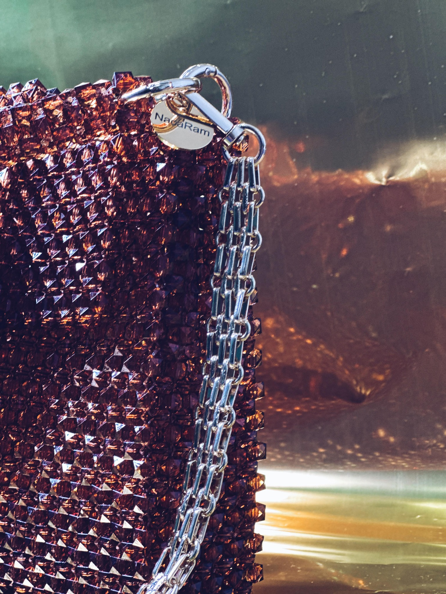

Publicado el 18 de noviembre de 2024
Bolso Pau: Nuestro Best Sellers
El bolso Pau es una de nuestras creaciones más icónicas, y no es difícil entender por qué. Hecho a mano en Tenerife, cada bolso Pau está compuesto por 2185 cuentas que, una a una, se han tejido con amor y dedicación, formando una pieza única y llena de significado. Este bolso no solo es un accesorio, es una expresión del alma de nuestra isla.
El bolso Pau está disponible en tres colores, cada uno inspirado en la belleza de la naturaleza isleña:
- Pau Atardecer (marrón): Inspirado en los cálidos atardeceres de nuestra isla, esos momentos en los que el sol se oculta detrás del horizonte y el cielo se llena de tonos ocres y dorados. Llevar este bolso es como llevar contigo la magia del final del día.
- Pau Esperanza (verde): Este color evoca los montes de pino canario, la vegetación que cubre nuestras montañas y simboliza la fuerza y la esperanza que nos regala la naturaleza. Perfecto para quienes buscan conectar con la serenidad de los paisajes verdes de nuestra isla.
- Pau Anochecer (gris): Un homenaje al volcán de La Palma, nuestra isla vecina. Este color representa la fuerza volcánica que nos recuerda la creación y la transformación. Pau Anochecer es una oda a la resiliencia y al poder de la naturaleza.
Cada bolso Pau cuenta una historia, una historia de amor por la artesanía y de respeto por nuestra tierra. Al elegir un bolso Pau, no solo estás eligiendo un accesorio hermoso y funcional, sino también una pieza que conecta con el espíritu de las Islas Canarias.
Déjate inspirar por la naturaleza y lleva contigo un pedacito de Tenerife con cada bolso Pau. Porque no hay mejor manera de destacar que con un accesorio que refleja la esencia de nuestra tierra y el cariño con el que ha sido creado.
